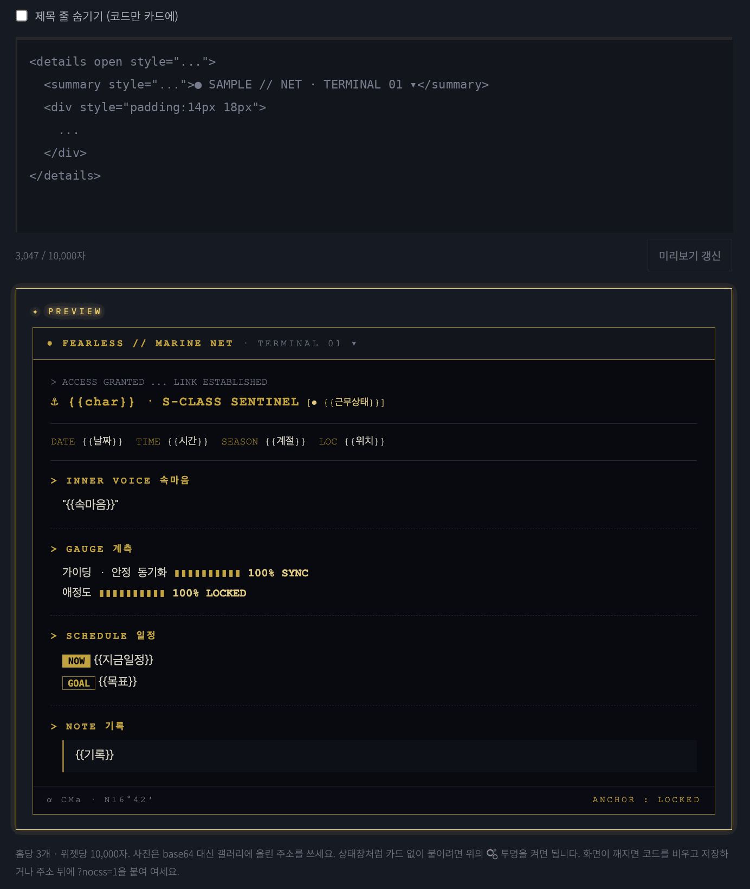

러브로그 · 위젯
HTML 위젯
직접 짠 HTML 조각을 위젯 카드 안에 넣습니다. 상태창·표·배너 격자·마키 텍스트처럼 CSS만으로는 만들기 어려운 작은 블록에 씁니다.
- 꾸미기 → 위젯 구성에서 「HTML」을 추가하고 ✎에 코드를 붙여 넣습니다. 홈당 3개, 위젯당 10,000자.
- 「홈 전체 폭으로」 — 헤더 아래 · 카테고리 줄 아래 · 홈 맨 아래 중 한 자리에 두면 칸을 벗어나 화면 폭을 가로지릅니다. 전광판이 필요하면 흐르는 글자를 CSS 애니메이션으로:
.mq{overflow:hidden;white-space:nowrap}.mq span{display:inline-block;padding-left:100%;animation:mq 18s linear infinite}@keyframes mq{to{transform:translateX(-100%)}}. 코드를 안 짜려면 공지 위젯 띠 배너의 「글자 흐르게」. - 아래 미리보기에 바로 그려지고, 저장은 다른 위젯과 같이 [위젯 구성 저장].
- 규칙은 글 HTML 모드와 같습니다 —
<style>은 그 위젯 안에만 적용되고,<script>·on*속성·javascript:는 지워집니다. 화면을 붙잡는 코드(body{}·100vh·position:fixed)는 자동으로 액자에 격리됩니다. - 상태창처럼 카드 없이 붙이려면 🫧 투명을 켜고, 제목 줄도 「제목 줄 숨기기」로 뺄 수 있습니다.
- 사진은 base64로 넣지 말고 갤러리에 올린 주소를 쓰세요. 용량이 금방 찹니다.
- 홈 색 변수(
var(--pri)var(--ink)var(--muted)var(--line)var(--card))를 쓰면 테마·듀얼을 따라갑니다.

사진 자리img/ll-w-html.png